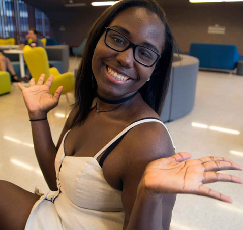

about me
intrigued? say no more...
Hi There! My name is Dyadra Saulsberry. Born and raised in Baton Rouge, Louisiana, I made a glorious expedition to Shanghai, China when I got the opportunity to be a part of the first graduating class of the newly founded New York University in Shanghai. Prior to enrolling into NYU Shanghai, I always found myself in fields of healthcare. Four years later, I am currently graduating with a Bachelors of Science in Interactive Media Arts, and a Bachelor of Arts in Integrated Humanities and a moderate fluency in Mandarin. During those four years, I’ve discovered a lot of what it means to be a global citizen, and have come to recognize that I have a duty not only to others, but to myself, but to make the world a better place.
I want to be able to expand my knowledge in understanding cultures that are not traditionally focused on by the media. I seek to use my skills in technology and programming to create better platforms to spread activism about many issues regarding civil and behavior justice. I am planning on pursueing my master in clinical psychology, but until then, I am totally available for any career oppurunity that may come my way. Feel free to check out my Resume or contact me below! Cheers :)


Wechat ID:
dyadra

Email Address:
Dyadrasaulsberry@gmail.com

Phone:
+1 (225) 610 - 0935